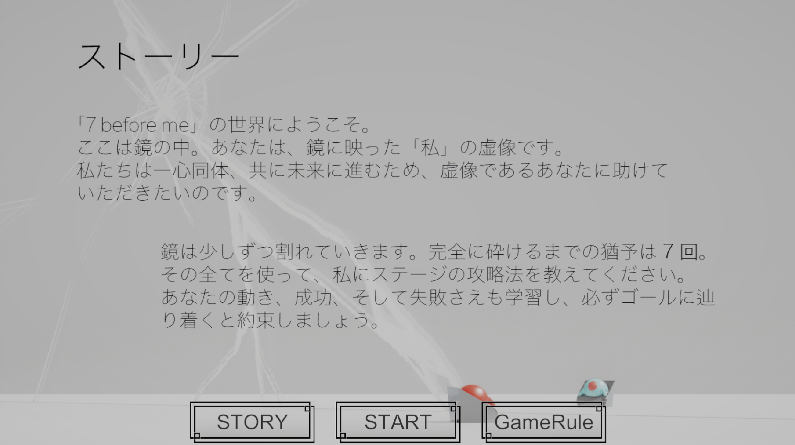
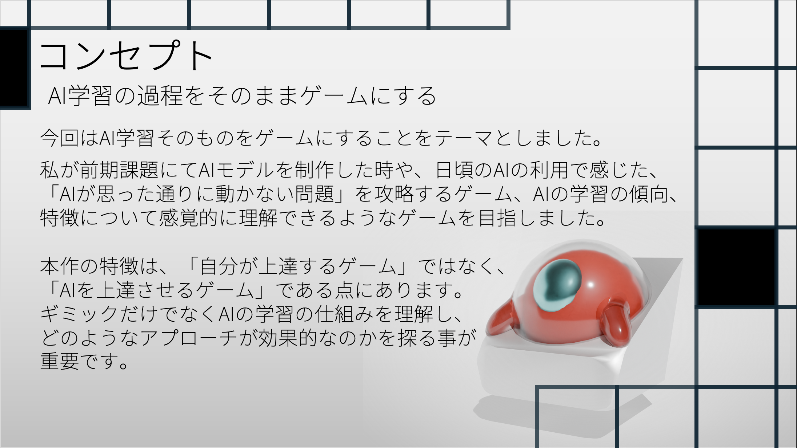
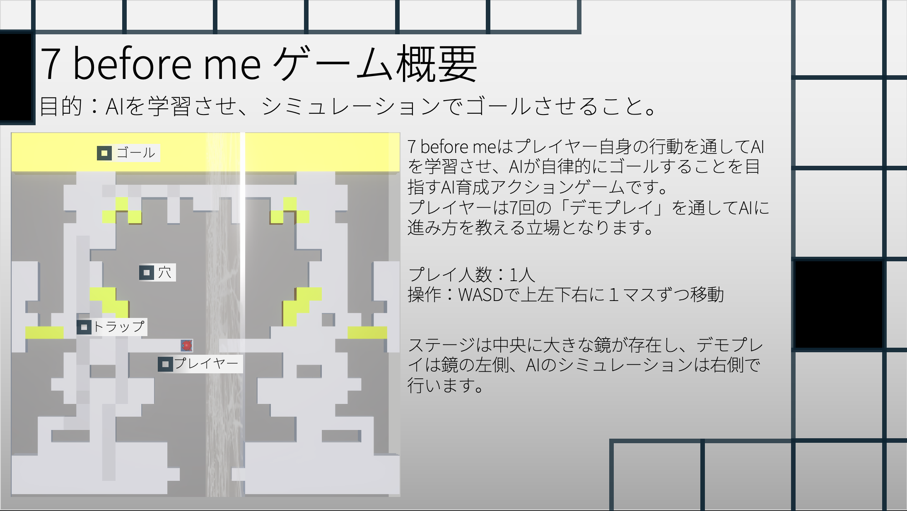
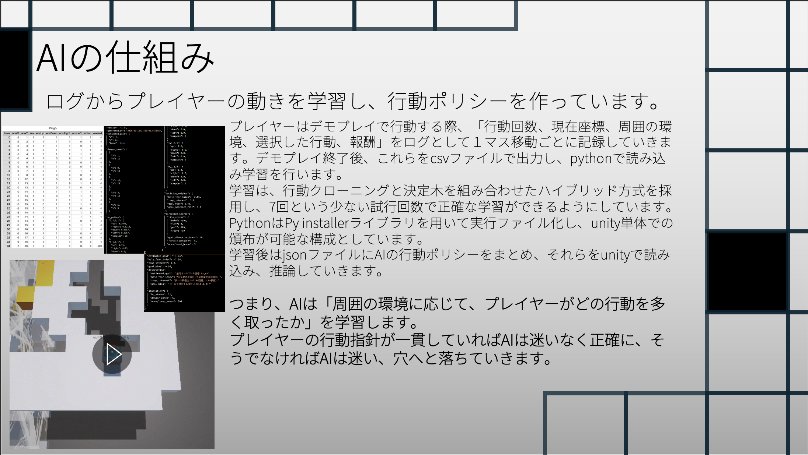
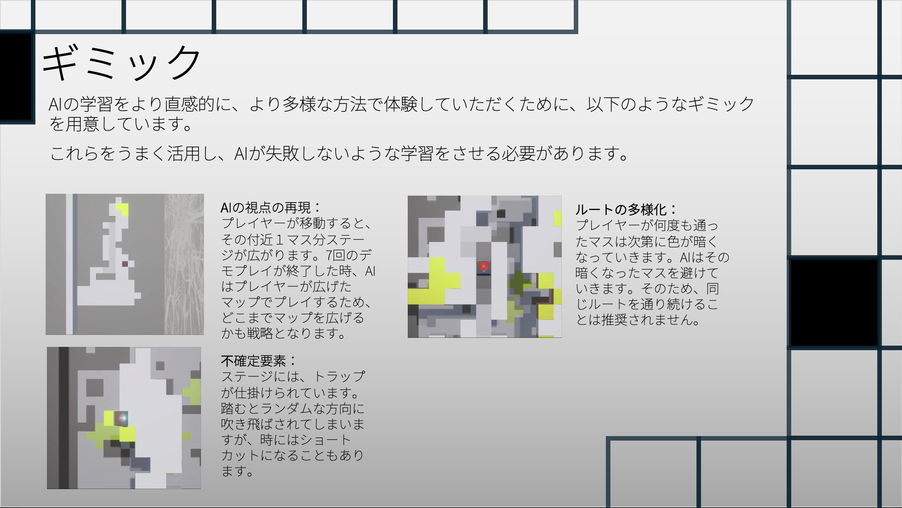
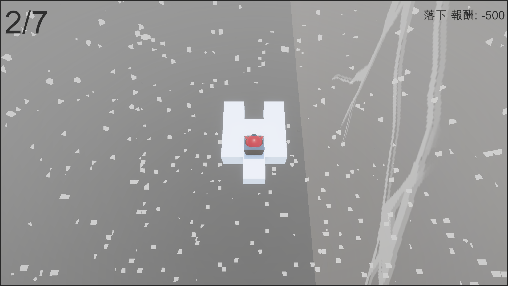
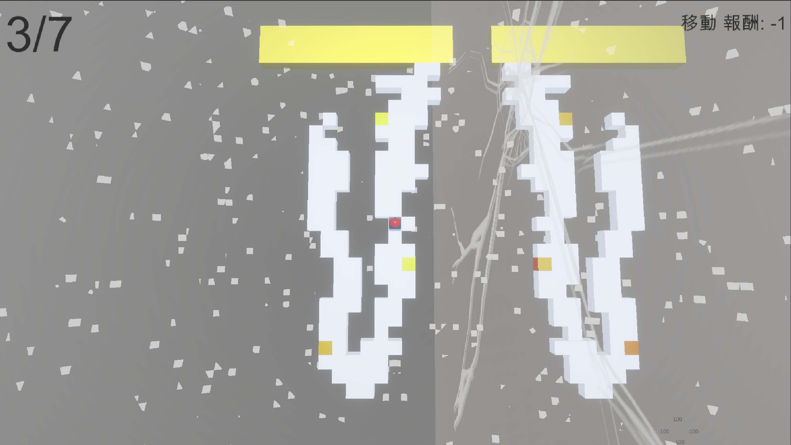
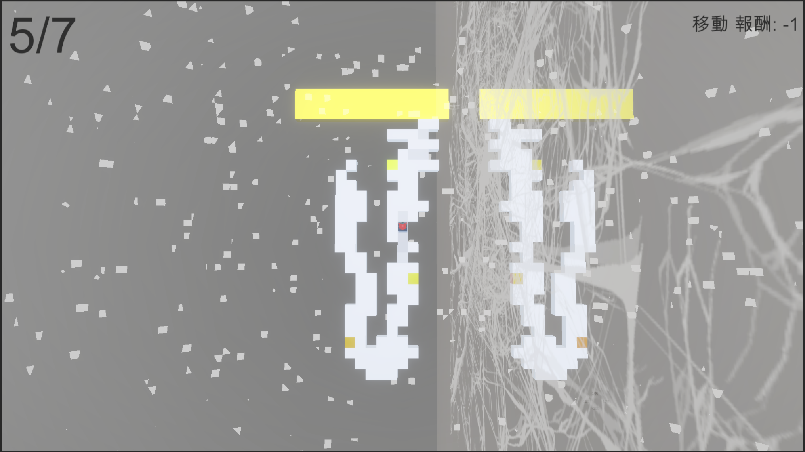
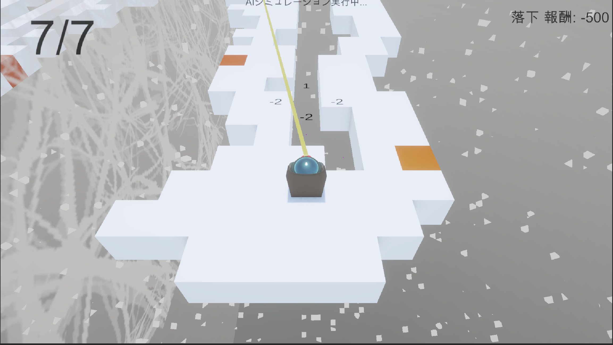

7 before Me
AIをクリアさせるために上手く学習データを作るゲーム
CONCEPT
鏡に隔てられた世界で、あなたは鏡に写った像です。
7回のデモプレイを通じて、AIにステージの攻略方法を学習させ、最終的にAIが自動でパズルをクリアすることを目指します。
GALLERY










クリックで拡大表示
DEVELOPMENT
授業課題にて作成。AIの仕組みをゲームとして体験できるようにすることを目的とし、
また、私自身のAIに対する理解度向上、及びunity6.2という最新バージョンでの開発経験を積むことを
目的として制作しました。
このゲームはプレイヤーが7回のデモプレイを行い、その行動ログをもとにAIが学習を行い、
最終的にAIがステージをクリアできるかシミュレーションするという流れで進行します。
AIは学習アルゴリズムには行動クローニングと決定木を利用し、
7回のデモプレイを通じてAIがプレイヤーの行動を模倣します。
プレイヤーは複数回のゲームプレイを通して、どんな行動がAIの学習に効果的かを考えながら、
まるでパズルのギミックを解くようにAIがステージをクリアできるように学習データを作成していきます。
この流れで自然にAIの学習プロセスを体験できるようになっています。
ステージは、AIの視界を再現するように、プレイヤーの通った場所しか表示されない仕様であったり、
データに多様性を持たせるために複数回同じマスを通ると罰が与えられるようになる仕様、トラップを踏むと
ランダムな方向に飛ばされてログが乱れてしまう仕様などを実装し、デモプレイを繰り返すというプレイ体験が
単純な作業にならないよう工夫しました。
GAME FLOW
タイトル画面
ゲームの開始画面。ボタンをクリックで選択します。
ストーリー概要
ストーリーを説明する画像が表示されます。下のボタンで別のメニューに飛ぶことができます
ゲームスタート
そのままゲームをスタートします。WASDで移動し、デモプレイの行動を記録します。
ゲームルール説明
ルールについて説明があります。主にAIの学習方法についての詳細を知ることができます。下のボタンで別のメニューに飛ぶことができます
デモプレイ x7
プレイヤーの操作でデモプレイを7回行います。デモプレイは穴に落ちて失敗するか、ゴールに辿り着くかで終了し、行動ログがAIの学習データとして保存されます。
回数を重ねるにつれ、鏡にはヒビが入っていきます。
AI学習
7回のデモプレイで出力されたログをもとに、AIが学習を行います。プレイヤーはAIに攻略方法を学習させるのが目的なので必ずしもゴールに辿り着く必要はなく、穴に落ちて失敗しても直接的なペナルティはありません。
AIシミュレーション
学習したAIが、実際にステージをクリアできるかシミュレーションを行います。学習が不十分な場合、AIはステージをクリアできずに穴に落ちたり、時間切れで消滅したりします。
クリア
あなたは7回の命を持って、自分の未来を守ることができました。画面を押すとタイトルに戻ります。
失敗
あなたの7回の命は、あなたの未来を救うには足りませんでした。リスタートすることができます
タイトル
タイトル画面に戻ります。
リスタート
前回のログを消去して、再び7回のデモプレイが始まります。